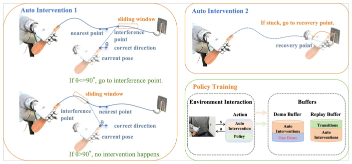
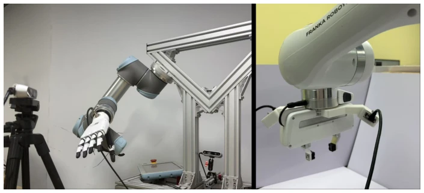

The title of this paper is quite ambitious, "One Demonstration is Enough", sounding like a "single-point breakthrough" myth for the RL community. AutoSERL indeed automates that tedious "human teacher" in HIL-SERL, replacing manual intervention with three mechanisms. However, do not get too excited too soon; this approach mainly relies on geometric heuristic rules, which work passably in contact-intensive tasks, but once failure modes become complex or the action space expands, it may just fail. It does not solve the ultimate problem of "generalization", merely swapping "human supervision" for "rule supervision", essentially compressing human experience into a single trajectory. For the industry, saving labor costs is tangible, but the algorithm's robustness depends on whether it can withstand more variants subsequently. Compared to multi-demonstration methods, its data efficiency is extremely high, but the cost is reduced flexibility, belonging to a typical "trading rules for efficiency" compromise scheme.
Real-world robot reinforcement learning (RL) has always been stuck at two hurdles: one is the high cost of trial and error, where damage is too costly to repair; the second is sparse rewards, making it hard to learn anything. Previous SERL [14], although sample-efficient, still relied on 20 demonstrations for initialization, making data collection still troublesome. Later, HIL-SERL [15] introduced Human-in-the-Loop, allowing humans to correct in real-time; while effective, it relies too much on manpower, humans get tired, responses are slow, and it cannot scale up. This raises the core question: Can we retain the safety and guidance of HIL without having a real person watch constantly? AutoSERL aims to solve this "human bottleneck", letting the machine learn how to "prop up" the robot itself, rather than having humans prop it up continuously. Existing work is either data-hungry or human-dependent, lacking an automated intermediate state.
The core of AutoSERL is a closed-loop automated intervention system, operating based on a single demonstration trajectory. The overall process is: first collect a demonstration trajectory, define two recovery points (recover point0 and recover point1), then dynamically intervene through three modules during the training process. First is Sliding Window Intervention, it slides along the demonstration trajectory, calculating the distance between the manipulator end-effector and trajectory points within the window; if deviation exceeds the threshold and direction matches (angle ≤90°), it guides the robot back to the trajectory point, preventing getting stuck in local optima or hitting walls. Second is Safety Recovery Mechanism; when detecting the robot is stuck (stagnant), it automatically plans a path back to recover point0 and replays demonstration segments, forcibly restoring progress. Finally is Intervention Termination; once the policy can complete the task independently and intervention count is below the threshold, all interventions are closed, letting RL explore fully. In terms of data flow, trajectories generated by intervention and demonstration data are stored in Demo Buffer, training data is stored in Replay Buffer, jointly updating the policy. Parameters such as th1, th2 control intervention sensitivity.

Fig. 1: Overview of AutoSERL. Auto Intervention 1 (Sliding Window Intervention): the robot is guided to the nearest point within the sliding window only when the angle θ between the trajectory’s forward direction and the vector to that point satisfies θ ≤90◦, preventing the robot from being pulled back to already-visited positions. Auto Intervention 2 (Safety Recovery Mechanism): when the robot is stuck, it is guided to the recovery point and the demonstration segment is replayed to restore progress. Policy Training: intervention-guided transitions and the single demonstration are stored in the Demo Buffer and Replay Buffer for policy training.
The authors tested 6 contact-intensive tasks on two robots (Franka and UR5), including insertion/removal, hanging, and drawer pulling. Baselines include SERL (20 demonstrations), Behavior Cloning (BC), MILES, and HIL-SERL. Results show that AutoSERL has a significantly higher success rate than SERL within the same training time, and performs comparably to HIL-SERL, even achieving 100% success rate on insertion/removal tasks. Ablation studies prove the three modules are indispensable; removing the recovery mechanism leads to performance lower than SERL, while retaining intervention without termination limits exploration. Additionally, under position perturbation, AutoSERL is more robust than SERL. This indicates that single-trajectory automated intervention can indeed replace multi-demonstration or human supervision, but only limited to specific task distributions.

Fig. 2: Experimental setup. Left: the setup for the hanging and hinge-based tasks, consisting of a UR5 robot, an Inspire dexterous hand and two Intel RealSense D435 cameras. Right: the setup for the insertion tasks, consisting of a Franka robot and two wrist-mounted Intel RealSense D405 cameras.